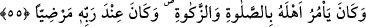

kendisinden hayır ve iyilikler meydana gelen kimse övülür. Bundan dolayı bazı âlimler,
Allâh’ın sözünden değil de tehdidinden dönmesinin câiz olduğu görüşündedirler. İmam
Vâhidî el-Vasît’ta “Kim bir mü’mini kasden öldürürse onun cezası cehennemdir.”
(en-Nisâ, 4/93) âyetinin tefsirinde bunu açıklamıştır. Bir hadîste ise şöyle buyrulmuştur:
“Kim bir kimseye yapacağı bir işten dolayı bir mükâfat sözü verirse onu yerine
getirmelidir. Ancak bir kimseyi yaptığı bir işten dolayı bir cezâ ile tehdit eden bunu
yerine getirmek ve getirmemekte serbesttir.”[28] Araplar, bir kimseye bir kötülük vaad
edip onu yapmayan kimsenin bu davranışını sözünden dönme ve ayıp saymazlar, aksine
bunu bir üstünlük ve iyilik sayarlardı. Nitekim şöyle denilmiştir:
Ben bir vaadde veya tehditte bulunduğum zaman,
Tehdidimden vaz geçer vaadimi yerine getiririm.
Yine şöyle denilmiştir:
Bolluk vaad ettiğinde onu yerine getirir.
Darlıkla tehdit ettiğinde akıl ona engel olur.
Yahyâ b. Muâz’ın şu sözü ne kadar güzeldir: “Allâh’ın vaadi de tehdidi de haktır.
Vaad, ‘Bunu yaptığınız zaman size şunu vereceğim’ diye Allâh’ın garanti verdiği şey
hususunda kulların hakkıdır. Verilen sözün yerine getirilmesi bakımından kim Allah’tan
üstün olabilir ki? Tehdid ise Allâh’ın kullar üzerinde bir hakkıdır. Çünkü onlara: “Şöyle
yapmayın, yoksa size azâb ederim” buyurdu. Eğer kullar yasaklanan şeyi yaparlarsa
Allah dilerse onları affeder, dilerse cezâlandırır. Çünkü bu, O’nun hakkıdır. Ama
münâsib olanı, affetmek ve ikramda bulunmaktır. Çünkü Allah, çok bağışlayıcı ve
merhametlidir.” Celâleddin Devvânî’nin Şerhu’l-Adud adlı eserinde böyle
geçmektedir.
“Rasûl ve nebî idi.” Allah Teâlâ onu, babası İbrâhim’in zamanında Cürhüm, Amâlîk
ve Yemen kabilelerine peygamber olarak göndermişti. el-Kâmûs’ta şöyle der: “Cürhüm
Yemen’in bir kabilesidir. Hz. İsmâil onlardan evlenmiştir.”
“O bir nebî idi.” Allah’tan haber veriyordu. O, babası İbrâhim (a.s.)’ın şerîatına göre
amel ediyordu. Ona indirilen bir kitabın olmadığı bütün âlimlerin ittifâkıyla sâbittir.
Lût, İshâk ve Yakûb peygamberler de böyledir.
55. Halkına namaz kılmayı, zekât vermeyi emrederdi. Rabb’i yanında
beğenilmişti.
“Halkına” yani doğum veya evlilik yoluyla kendisine bağlı bulunan özel halkına ve